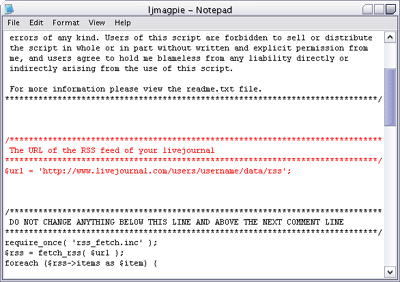
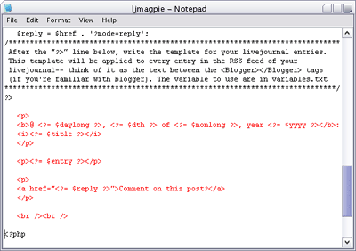
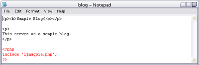

Embedding Livejournal Entries
When I started using livejournal, I wanted to integrate it with the rest of my site but didn't know how. I didn't want to use frames because I never use frames (hehe). I tried making an RSS parser, but it was too much. And then I discovered Magpie RSS.
Magpie RSS is a "simple RSS integration tool". It takes an RSS feed and allows end-users to show the contents in another file, using PHP. The result is that you can have the information from the RSS feed show up on your site. I used this wonderful tool to show my latest livejournal entries in a blog-like format on my domain. Instant blog! Ditto with the photolog/screenlog-- it is from my eveningsky livejournal.
So this is a simple tutorial on how to use Magpie RSS to include livejournal entries on a page on your domain.
Requirements
- Magpie RSS, found at http://magpierss.sourceforge.net
- My Livejournal Magpie script, found at downloads.php?select=ljmagpie
- PHP (whatever requirements Magpie RSS has)
- A livejournal account
Instructions
- If you haven't done so already, download Magpie RSS and Livejournal Magpie from the links provided in the requirements section.
- Unzip the Magpie RSS zip file to somewhere on your computer first, and then upload the following files to the same directory you want your "blog" page to be shown:
- rss_cache.inc
- rss_fetch.inc
- rss_parse.inc
- rss_utils.inc
- extlib/Snoopy.class.inc (keep this in the extlib directory!)
- Unzip the LJ Magpie zip file to somewhere on your computer, and open up ljmagpie.php
- Find the lines shown in red in the image below, and change the value of "username" to your livejournal account username.

- Scroll down the file and find the section that looks like the section shown on the image below. The red text is the template for your entries. You can probably leave this part alone, but if you want to customize how the entries look like, you'll want to change this. Please refer to the templatevars.txt file for the full list of variables.

- Now look at the files that the LJ Magpie script contains. There is a blog.php file there-- you can rename this file to any filename you want your "blog" to have, as long as it ends in .php. Now open this file. The only really important part of this file is the lines in red below:

This page you can edit to your heart's content-- insert your layout, etc. The three lines highlighted above is where your livejournal entries will go, so build your layout around those three lines.
- When you're done or you want to see what the page looks like, upload blog.php (or whatever you've renamed it to) and ljmagpie.php to the directory on your server (where you earlier uploaded the Magpie RSS files). Load up blog.php on your browser and check out the results. :) And you're done!
If you have any questions, please feel free to contact me and ask. :)